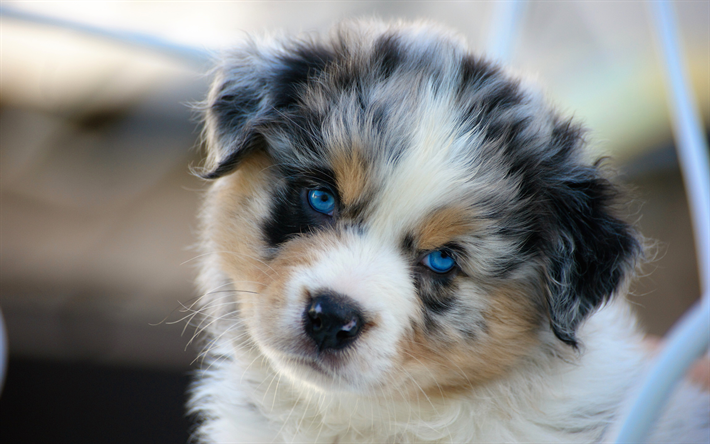

Thanks to their working dog background, Aussies are well-equipped for a number of different jobs. Besides herding and performing tricks, the canines also make great search and rescue dogs, as well as therapy dogs.
Aussies are very loving companions, but they need to stay active. Without proper stimulation, they may grow bored and restless. Left alone, their natural instincts might kick in, leading to them to start herding other things in your house. (Watch out for your children getting bunched in an orderly herd and pushed into a fenced area.)
According to the AKC, this unique dog is the 18th most popular breed in the United States. That puts them ahead of Chihuahuas, Pomeranians, and Cavalier King Charles spaniels.
